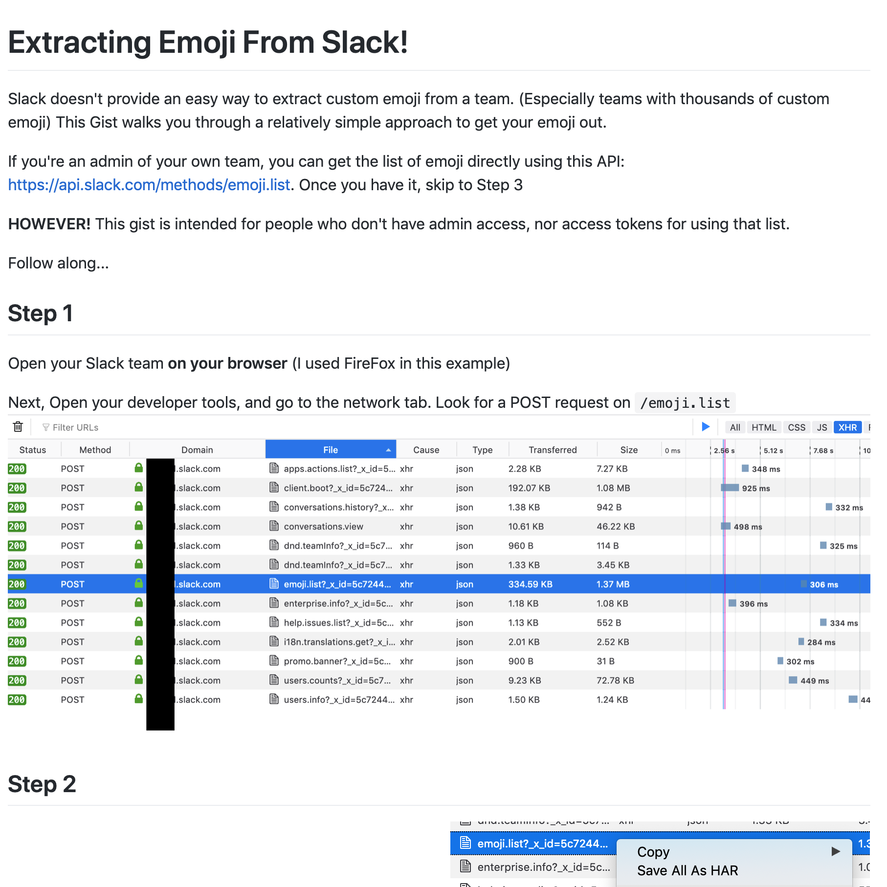

Extracting Emoji From Slack

I use Slack at work. A lot. And the instance of Slack I primarily use has a lot (9000+) of reaction emojis. I then go to use other Slack instances, and they don't have some of the key emojis I rely on for my daily conversations. This tool helped me extract all of the emojis from our Slack instance, so I can use them other places with ease.
:the_more_you_know_: :magic: :nerds: :party_parrot:
- Prior: My Clean Floors!
- Next: Monument Valley - 3D Printed Totem